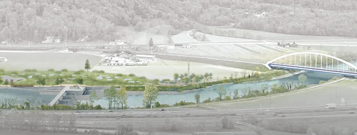
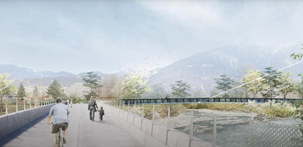

Bref historique
La 1ère correction du Rhône
Effectuée entre 1860 et 1890 par la création de deux digues parallèles protégées par des épis visant à concentrer l'écoulement en hiver. Correction dont le but était de protéger la plaine contre les inondations et de libérer des zones agricoles.
La 2ème correction du Rhône
Effectuée de 1930 à 1960 par surélévation des digues et remblaiement de l'espace entre les épis, favorisant le resserrement du fleuve lors de basses eaux en améliorant le transport des limons.

À la suite des inondations et au rehaussement du fond par le dépôt des matériaux charriés, la capacité du fleuve est devenue insuffisante. L'espace disponible pour le cours d'eau est limité à un couloir étroit entre deux digues ; les crues y transitent avec un débit plus élevé que par le passé (réchauffement climatique). À certains endroits, le niveau d'eau est supérieur de 3 à 4 m au niveau de la plaine.
En cas de crue importante et/ou de rupture de digues, environ 100'000 personnes sont concernées, les dégâts estimés à plus de 20 milliards de francs.
Le projet de la 3ème correction du Rhône
Le projet, validé par la Confédération et les cantons de Vaud et du Valais, est devisé à environ 7 milliards de francs. Il prévoit le rélargissement du Rhône dans tous les secteurs où cela est possible, ainsi qu'un renforcement et une surélévation des digues dans les zones construites en limite actuelle du fleuve.
Le projet MBR3
Conjointement aux travaux de 3ème correction du Rhône, un projet de barrage « MBR3 » est planifié entre Bex et Saint-Maurice. L'aménagement projeté est une centrale-barrage de basse chute similaire à celles qui existent sur l'Aar et le Rhin.
La centrale hydroélectrique exploite une hauteur de chute de 7.5 m environ pour un débit maximum de 220 m³/s. La puissance de la centrale est de 13.5 MW.
Outre le projet de barrage en amont du pont CFF des Paluds, le lit du Rhône sera élargi sur rive droite d'environ 70 m depuis l'embouchure de l'Avançon. Un nouveau pont sera construit entre Bex et Massongex, le pont existant déplacé sur l'Avançon. L'embouchure de l'Avançon sera élargie et renaturée.

Incidences pour les Pontonniers
Navigation
Dans sa majeure partie, le Rhône corrigé présentera un parcours semi-sauvage, divaguant entre zones nature et bancs de gravier. La navigation en sera « plus sportive » : il faudra chercher, en basses eaux, les chenaux navigables.
Dans le secteur du barrage, la largeur n'étant pas modifiée, le Rhône sera similaire à ce que nous connaissons, une largeur d'environ 70 m avec un courant constant.
Notre bâtiment
Notre bâtiment, construit en 1929 et situé dans la zone de rélargissement du Rhône, devra être détruit. Fin 2023, nous avons signé la convention pour les travaux et effectué la mise à l'enquête de notre nouveau bâtiment.
Le nouveau bâtiment, d'une surface au sol de 216 m², sera reconstruit environ 200 m en amont de l'Avançon. Il sera composé de :
- Niveau inférieur : local technique et dépôts.
- Niveau supérieur : dépôt, vestiaires, douches, WC, cuisine, salle de société.
Le début des travaux est planifié au 2ème semestre 2026 pour une mise à disposition courant 2028.